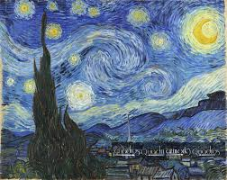

Scultura creta da Michelangelo Buonarroti, si trova nella galleria dell'Accademia, Firernze.

Un'opera d'arte affascinante vista nella galleria principale.
Questo dipinto mi ha catturato per i suooi colori e mi ha trasmessomolte emozioni.
Scultura creta da Michelangelo Buonarroti, si trova nella galleria dell'Accademia, Firernze.
Questa scultura e' alta 5 metri e rappresenta Davide, eroe biblico, prima della barttaglia contro il gigante Golia.